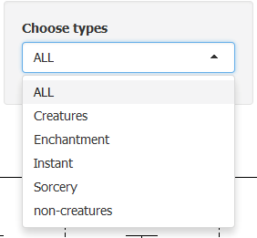
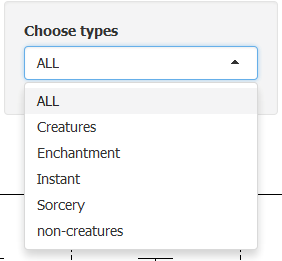

Magic the Gathering is a card game that puts together best of chess and poker.
Every quarter, there is between 150 to 300 new cards with new gameplay. Cards are grouped by expansions and blocks (2 to 3 expansions).
One way to play is to only use the two latests block (format standard) and since cards change 6 months, winning strategy are never the same.
Since Magic is more than 20 years old, it is very useful to compare new expansions with older ones to find potential wining strategies, and "Magic The Gathering Explorer" aims to help player to do so.
Number of magic expansions :
## [1] 193
 
